1. TOP Composition Exploration
Experimenting with a range of TOP operators to achieve different visual effects:
Expanding on the network from the TOP lesson on the VLE which used the Edge TOP operator by overlaying colourful noise and adding a Bloom TOP to create a more interesting visual outcome:
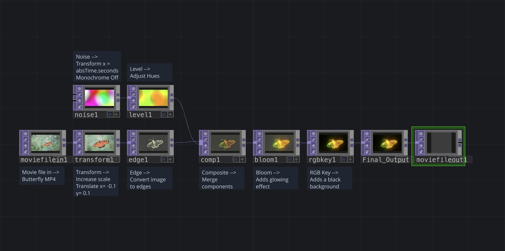
Touch Designer Network Screenshot
Experimenting with overlaying noise TOPs with different parameters and TOP operators to alter the visual appearance of the final outcome:
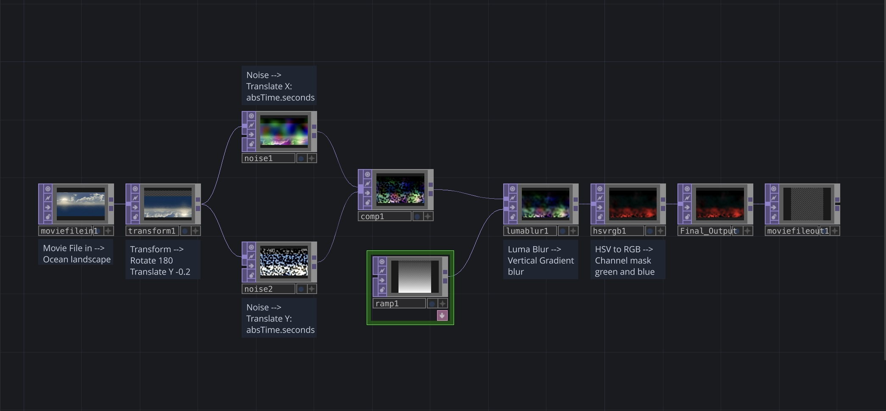
Touch Designer Network Screenshot
Using a Movie File In TOP and multiple mirror TOPs to create a kaleidoscope effect:
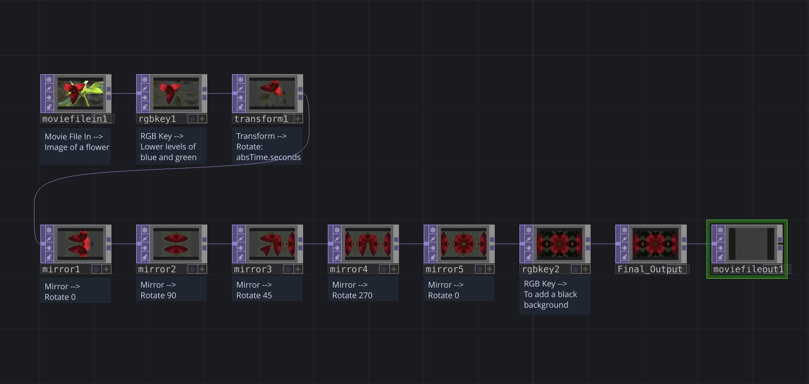
Touch Designer Network Screenshot
2. TOP Feedback
Using CHOP and TOP components to manipulate colour values and positioning:
Expanding on the network from the TOP feedback lesson on VLE by: adding Noise and Lag CHOP operators after the LFO CHOPs to manipulate the data, altering TOP parameters and adding more TOP operators such as Level and Bloom:
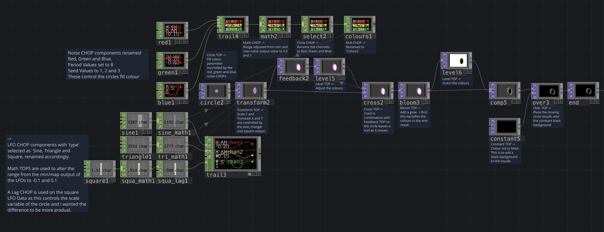
Touch Designer Network Screenshot
3. Noise TOP
Using Noise TOPs to generate organic visual effects:
Expanding on the network from Noise Example 2 in the Noise lesson on the VLE:
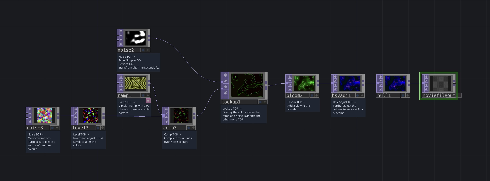
Touch Designer Network Screenshot
Altering the Parameters to create a different iteration of the same Noise experiment:
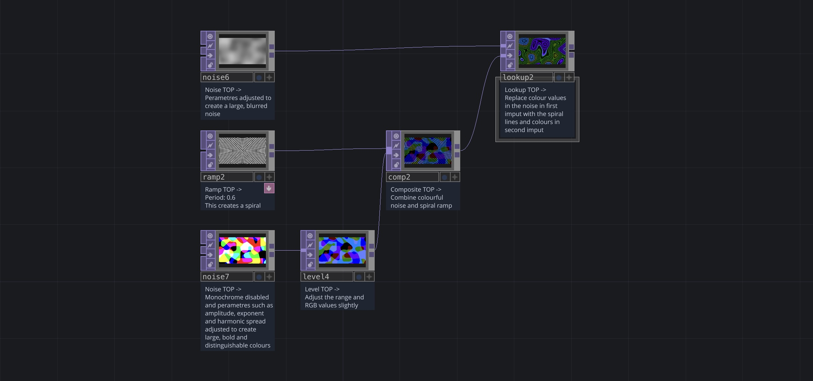
Touch Designer Network Screenshot
Adding Noise Operators to the TOP feedback experimentation with parameters controlled by the same Sine, Triangle and Square LFO data references:
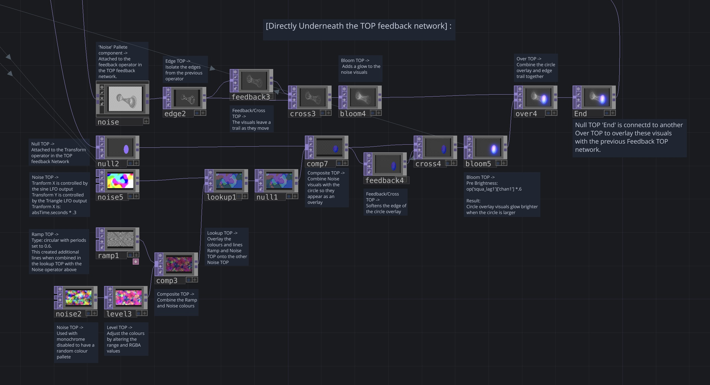
Touch Designer Network Screenshot
4. Audio Analysis
Using channel operators to analyse audio data in order to create audio-synced visuals:
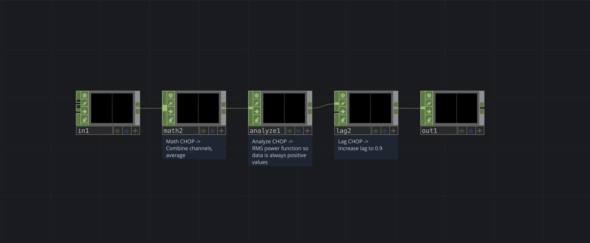
Touch Designer Network Screenshot
CHOP network from the audio analysis lesson on the VLE.
Using Math CHOPs with the audio analysis component as references to various TOP parameters:
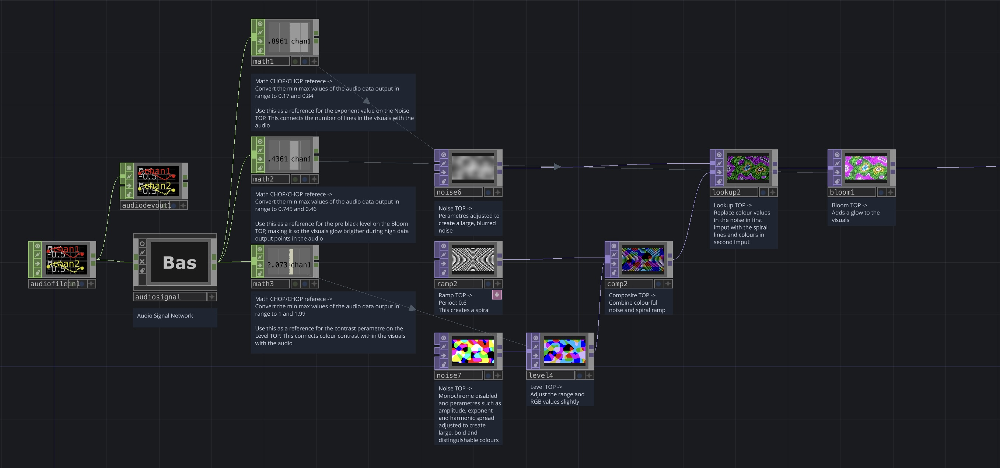
Touch Designer Network Screenshot
Using the Audio Analysis component from the Palette in Touch Designer to isolate specific data points in an audio file to to drive visuals:
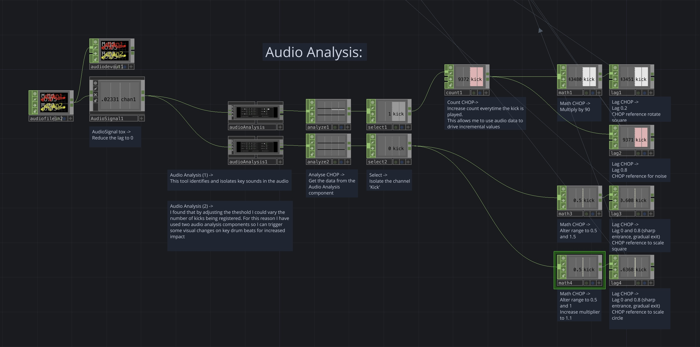
Touch Designer Network Screenshot
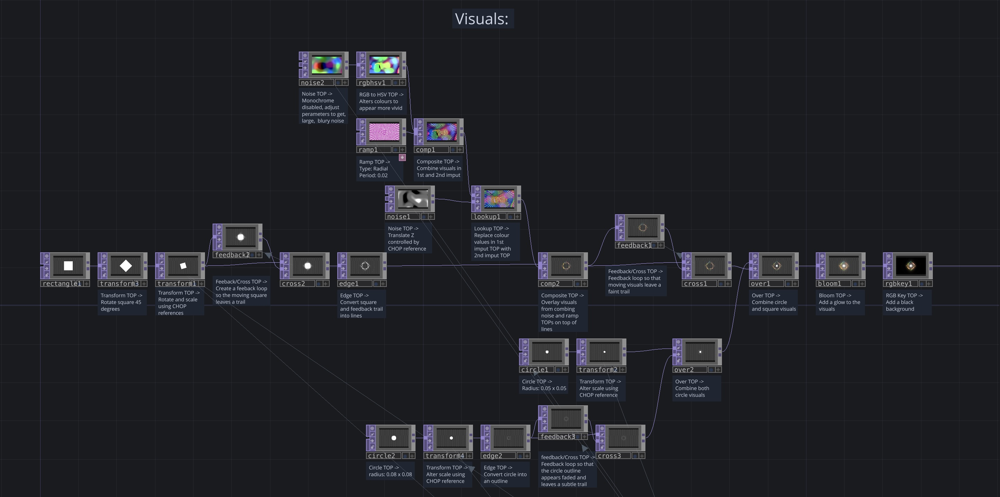
Touch Designer Network Screenshot
5. 3D Composition Exploration
Using surface operators, Camera, Geo and Light components and the Render TOP to create 3D visuals:
Expanding on the Introduction to 3D lesson on VLE by adding TOP operators and altering parameters:
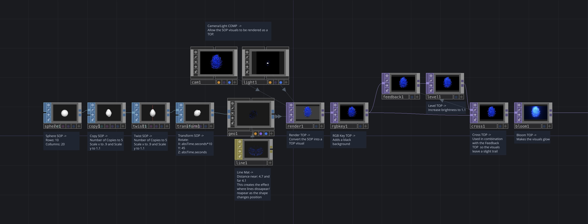
Touch Designer Network Screenshot
Using a Phong MAT operator and a Movie File In TOP to apply a video file to a SOPs surface:
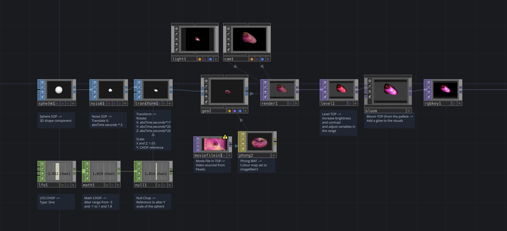
Touch Designer Network Screenshot
Using a Grid SOP as well as Noise, Sprinkle and Particle SOP operators to create an interesting visual effect:
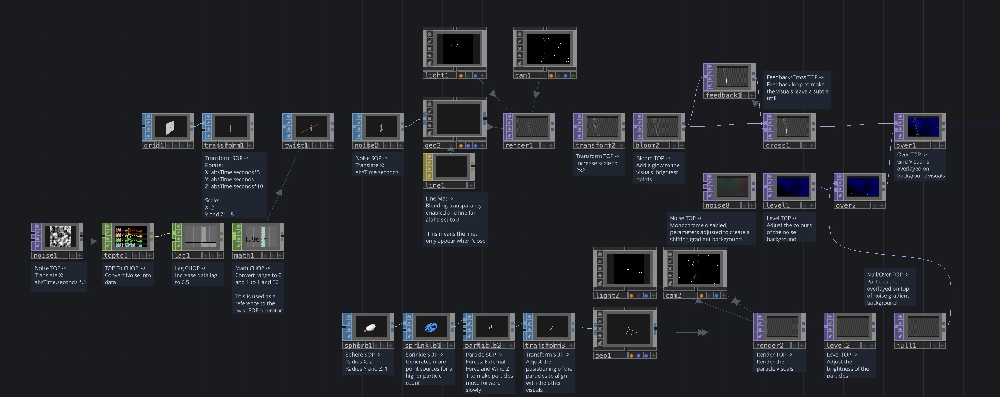
Touch Designer Network Screenshot
6. GPU Instancing
Using GPU Instancing to render complex, intricate visuals:
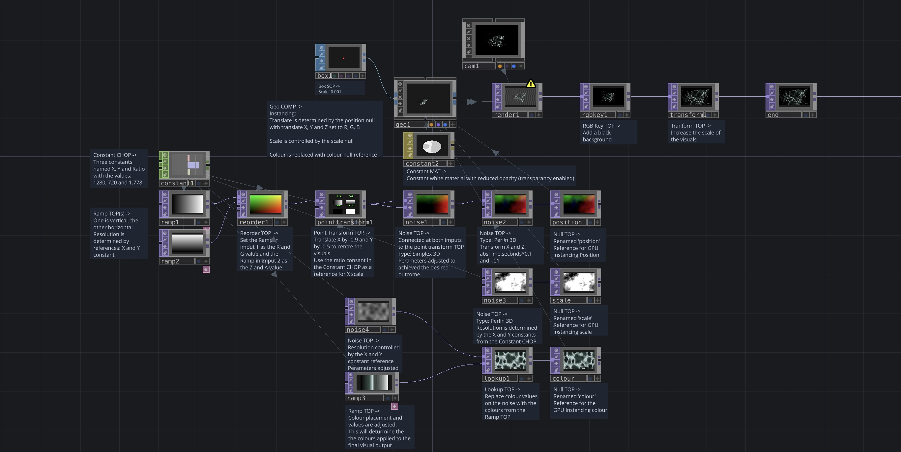
Touch Designer Network Screenshot
Initial outcome from the GPU Instancing lesson on the VLE:
Altering the parameters on the noise operator that determines the position of the GPU visuals. Changing the colour values on the ramp, and adding a Feedback loop and Bloom Transform operator post rendering:
Adding a series of Mirror TOPs in order to create an interesting kaleidoscope-like visual:
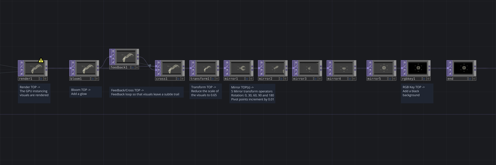
Touch Designer Network Screenshot
Experimenting with a PBR MAT and an environment light and combining this with the GPU visuals to create a reflective illusion:
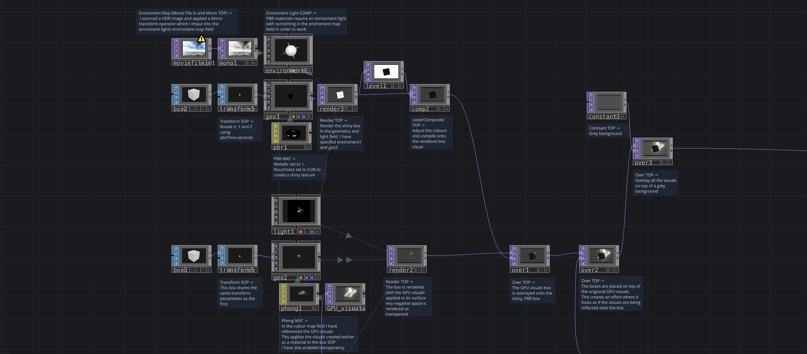
Touch Designer Network Screenshot
Altering the colours in all visuals by compositing a rainbow Ramp Operator over them.